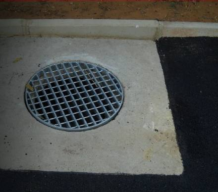
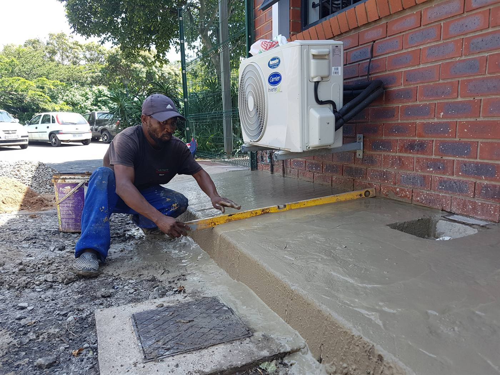
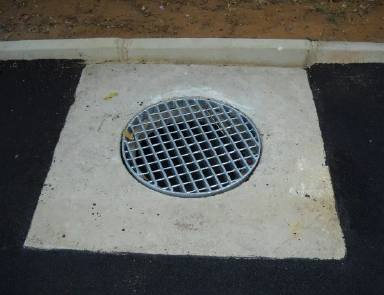
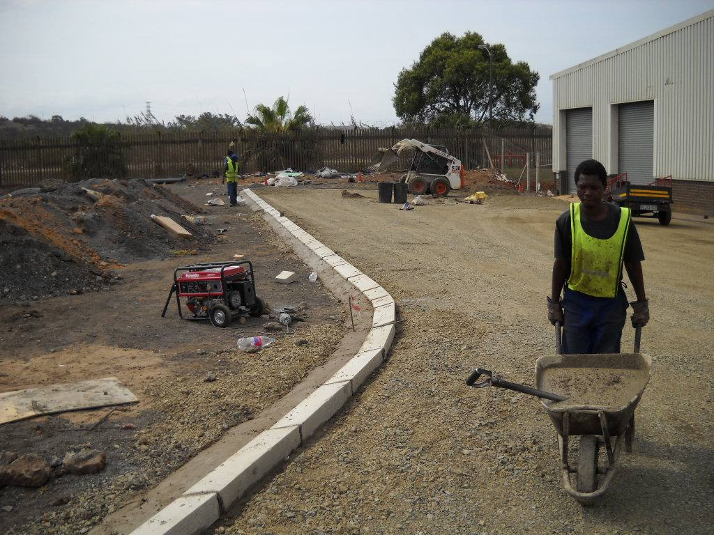
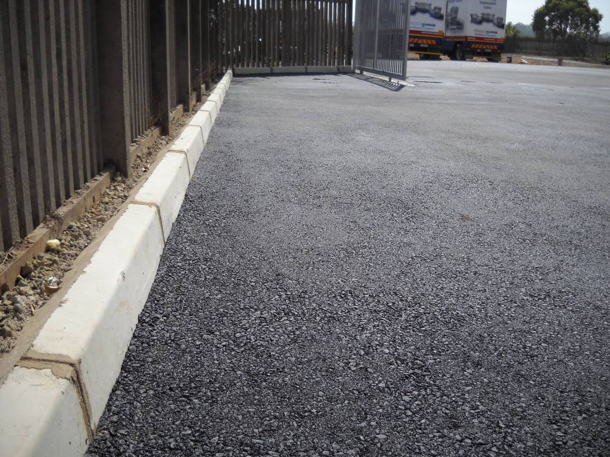

Drainage & Curbing
Control water. Protect the surface. Finish the edges properly.
- Durban Metro
- Residential
- Commercial
- Project work

SPCA SpringfieldControl water. Protect the surface. Finish the edges properly.
Effective drainage and well-defined curbing protect asphalt, paving and surrounding property from uncontrolled runoff, erosion and premature edge failure. SA Asphalt integrates practical water management and edge control into exterior works across residential, commercial and industrial sites.
- Stormwater control
- Neat, defined edges
- Protection against wash-away
- Integration with asphalt & paving
Built around the site
Every property is different. The right solution depends on levels, access, drainage, usage and how the new work connects with the surrounding area.
Stormwater Drainage
Drainage points and practical water-routing solutions planned around the site levels and finished surface.
Curbing & Edge Control
Kerbs and edge restraints that support the surface, guide runoff and create a neat, defined finish.
Integrated Surface Works
Drainage and curbing coordinated with asphalt, paving, entrances and parking areas so the finished work functions as one system.
How we approach the job
1. Assess levels & water flow
Understand the site and what the finished work must achieve.
2. Prepare and set out
Establish the correct preparation, set-out and working conditions.
3. Install drainage / curbing
Complete the core installation with attention to levels and workmanship.
4. Tie in and finish surfaces
Inspect tie-ins, edges and overall finish before handover.
SA Asphalt project photographs



Complete the project
Ready to discuss your project?
Send us the details and photographs, or request a site visit and quotation.